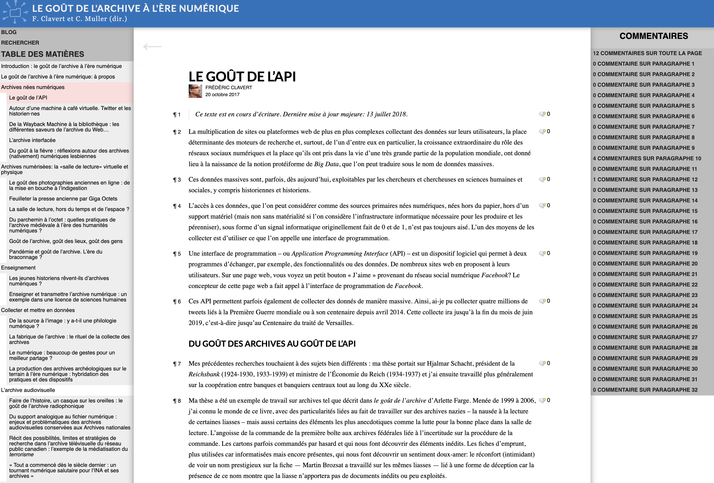
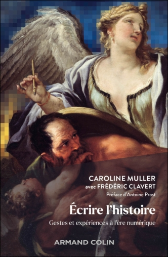
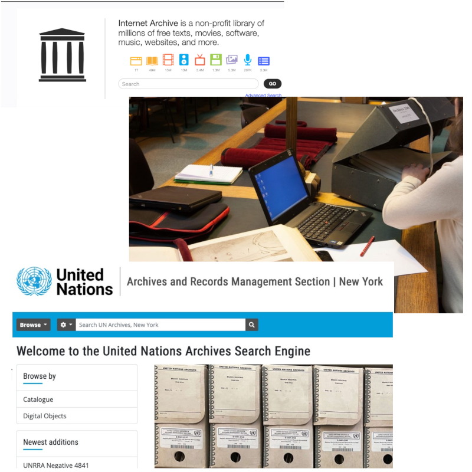
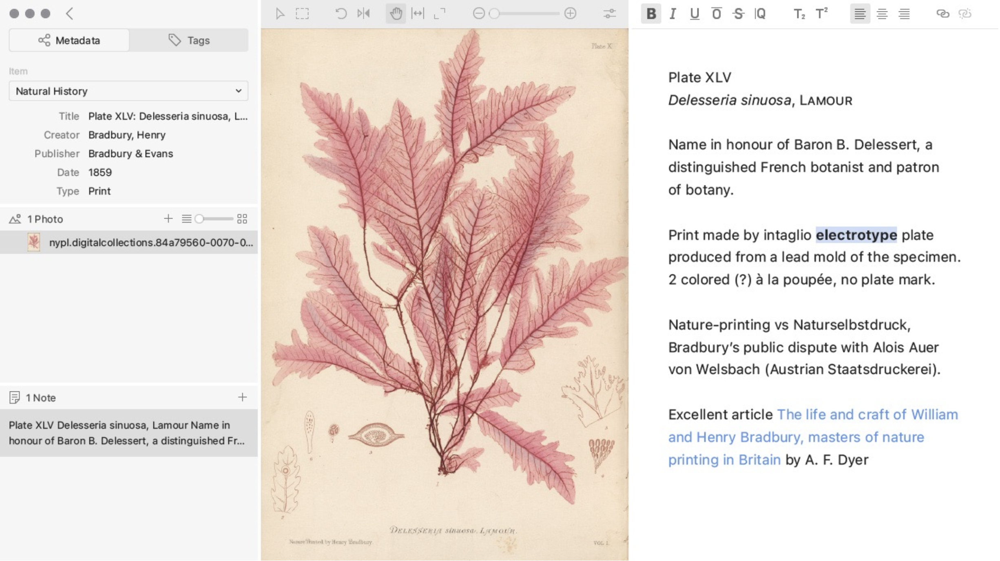
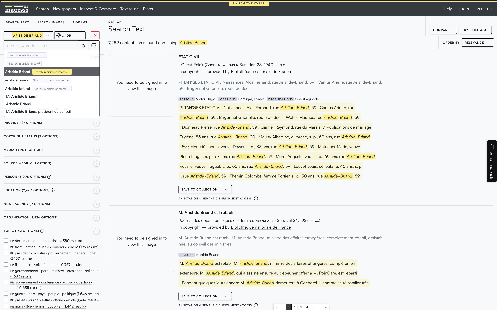
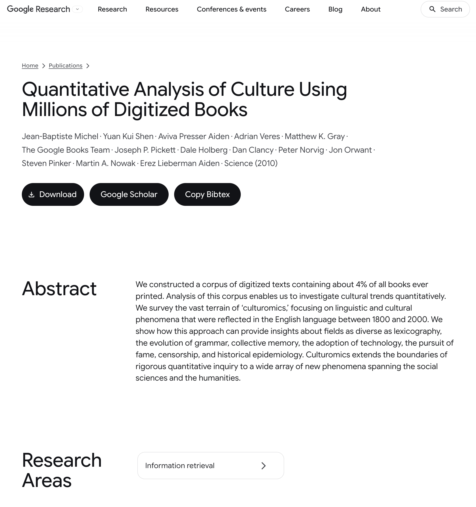
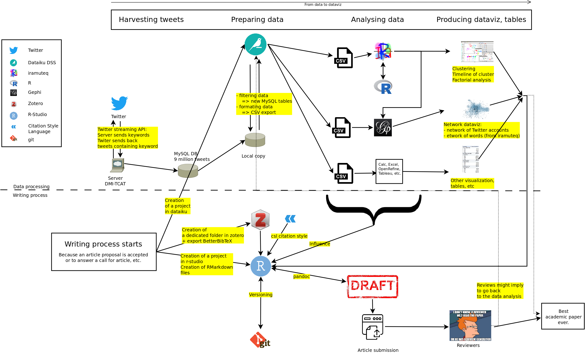
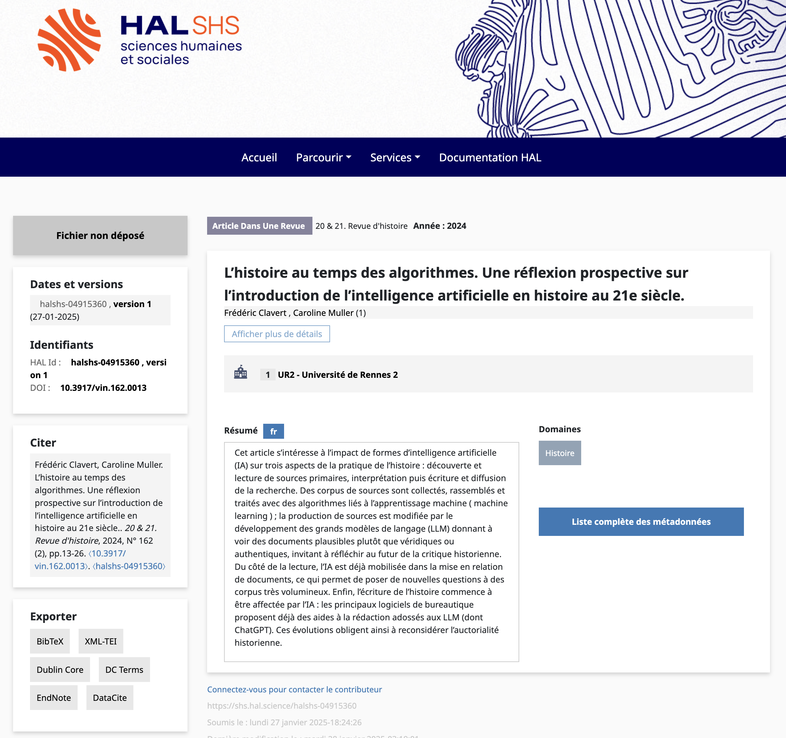
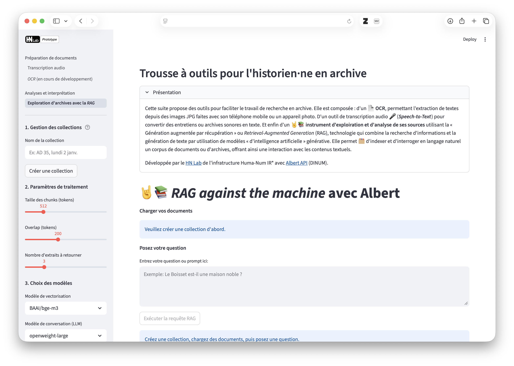

# <small>quels besoins numériques pour les historiens et les historiennes ?</small> frédéric clavert, c2dh (et caroline muller, rennes 2) journée d'étude<br />section des archivistes régionaux metz, 28 mai 2026
## qui suis-je?
## <small>du goût de l'archive à l'ère numérique...</small> <p></p> Note: - Volonté dès le départ, en 2017, de travailler avec l'AAF et des archivistes, soutien de l'AAF - 21 chapitres, dont trois par des archivistes (Dominique Naud, Julien Benedetti et Céline Guyon) - plusieurs journées d'études, dont une organisée avec l'AAF aux AN, démarrant par une discussion entre Sean Takats et Arlette Farge, tous deux modernistes. - livre en ligne, avec possibilité de commenter au niveau du paragraphe - pratiques très variables en fonction des périodes, des méthodes, des sujets abordés, des archives utilisées - quelques limites: la plupart des commentaires ont été émis par Caroline ou moi,
## <small>...à culturhist...</small> > dépasser le goût de l'archive pour s'intéresser aux pratiques des historiens et historiennes à l'ère numérique Note: - surtout: risque de fétichisation de l'archive, d'idéalisation, etc. - les pratiques que nous avons observées pendant l'écriture du livre en ligne, sur plusieurs années, ont montré plusieurs choses: - un fossé entre la manière dont historiens et historiennes se définissent collectivement - et la manière dont ils travaillent effectivement. - Autrement dit, en termes d'image on est toujours dans le monde d'Arlette Farge. En termes de pratique, nous n'y sommes plus du tout - le résultat est que nous avons plutôt commencer à regarder les gestes, les méthodes, et surtout les pratiques - d'où un constant: ont émergé avec le numérique des pratiques que nous avons qualifiées de "discrètes", c'est-à-dire non documentées. Ex: - le stockage de photos d'archives sur Google Drive, pour bénéficier d'un OCR de fait et d'une recherche par mots-clés,
## <small>...à *écrire l'histoire*</small> <p></p>
# <small>pratiques discrètes et transformation du métier</small> Note: Pratiques discrètes, non documentées, sont fondamentalement transformatrices du métier -- à la fois cause et conséquence de cette transformation. Ces pratiquers discrètes sont indissociables de plusieurs phénomènes: - l'émergence de l'informatiue personnelle dans un sens large (tablettes et smartphones inclus) - la mise en réseau de ces ordinateurs - la numérisation massive et, éventuellement, la mise en données de ce qui est numérisé - la numérisation de plus en plus importante de nos vies, c'est-à-dire la production massive de sources nativement numériques.
## <small>l'accumulation de salles de lecture (virtuelles ou non)</small> <p></p> Note: La convergence de ces phénomènes -- et l'énorme travail des métiers du livre, de l'imprimé, du nativement numérique -- a engendré une multiplication des types de salles de lecture. Bien sûr, les règles des 'anciens types' de salles de lecture, les physiques, sont toutes particulières, mais il y a souvent quelque chose d'assez ordonné dans ces règles, des habitudes que l'on peut prendre, etc. Ce n'est peut-être pas tout-à-fait la même chose des salles de lecture virtuelles, très nombreuses, accessibles en ligne ou parfois dans les centres d'archives ou les bibliothèques -- le dépôt légal du web par exemple. Chacune aura ses choix. Si l'on prend le site des archives de La Société des Nations, il est assez proche finalement de la consultation d'une boîte d'archives. Pas de fonctions de lecture distante, par exemple. Différent de ce qu'est l'équivalent de la salle de lecture d'internet archive, la wayback machine, avec des outils de visualisation de données, de ce que l'on appelle la lecture distante. Pareil à l'INA pour l'archive twitter par exemple.
## <small>l'incontournable moteur de recherche</small>  Note: - moteur de recherche "à la google" - grand impensé aujourd'hui des pratiques des chercheurs et chercheuses (en histoire ou non) - fondamentalement un déplacement des pratiques: les modes d'indexation ne sont plus les mêmes, la question d'occurrence n'est plus la même, etc.
## <small>numérisation et accessibilité: une illusion?</small> Note: Ian Milligan, Lara Putnam. Bref, tout ce qui n'est pas numérisé (voir plus loin).
## <small>photographie d'archives et gestion de l'information</small> <p></p> Note: - Peut-être la pratique discrète la moins discrète et la plus documentée aujourd'hui. - Étude Tropy: - Émergence de méthodes propres (usage de fichiers excel) ou de méthodes plus standardisées (Tropy) - transforme l'historien ou l'historienne en gestionnaire d'information, au risque de perdre une partie de ce qui a été trouvé - risque du FOMO, accumulations de photographies non exploitées mais faites 'au cas où'
## <small>un inventaire des gestes savants</small> > photographier, annoter, enrichir, océriser, mettre en données, requêter, zoomer, scrapper, coder, prompter... Note: La liste des 'nouveaux' gestes savants des historiens et historiennes est plutôt longue. Pas nécessairement pleinement assumée. Un symptôme de ceci est le nombre d’invitations reçues par Caroline Muller pour Ecrire l’Histoire: plus de 50. Pourtant, aucune présence sur les lieux classiques de l’édition historienne, à commencer par Blois (qui n’est qu’un exemple). Pas non plus de CR dans les grandes revues.
# <small>des méthodologies à discuter</small> Note: Problème que cela ne soit pas assumé. Décalage complet entre la manière concrète dont nous travaillons et la manière dont nous expliquons notre travail. Or différentes méthodes de recherche, par ex., = différentes archives consultées = différents articles et livres publiés.
## <small>le risque du mot-clé</small> <p></p> Note: - très efficace. Donne accès parfois à des archives auxquelles nous n'aurions pas pensé - mais c'est le risque de la décontextualisation Donne un très grand aperçu de sources disponibles dans un fond pour une recherche. Mais il reste un coût, souvent, qui est la décontextualisation. Exemple échange de lettre Kung - Schacht dans les archives de la chancellerie. Fin du respect des fonds, ou en tout cas de ce que les historiens et historiennes pouvaient en déduire. Par contre, sérendipité nouvelle. Il y a des solutions à ceci => impresso.
## <small>archives numérisées:<br /> géographie des inégalités documentaires</small> Note: - Nous avons plus récemment, avec Caroline, insisté sur les inégalités documentaires, notammment en donnant des exemples à l'étranger - en 2013, par ex., Ian Milligan et la presse canadienne - plus récemment, les pratiques des chercheurs du Nord vis-à-vis des archives du Sud: on ne se déplace plus, parfois on ne parle même plus la langue car traductions automatiques - des sujets avec peu de numérisation - Mais ces inégalités documentaires liées aux archives numérisées en France même - archives privées traditionnellement moins accessibles et souvent peu de numérisation - inégalités de numérisation d'un centre d'archives publiques à l'autre, pour raisons budgétaires, politiques, etc. - inégalités selon le type d'archives numérisées (presse, état civil, etc).
## <small>les corpus nativement numériques</small> Note: Bien sûr les archives du web. Plus délicat, les médias sociaux. Mais surtout grandes interrogations sur la manière dont les archives nativement numériques sont constituées. Certes, on connaît le projet VITAM, mais ce projet, implémenté aux AN et si j'ai bien compris dans les ministères régaliens comme le Quai d'Orsay qui ont leurs propres archives. Mais la question de l'accès n'est pas encore claire. Ni la question des critères de conservation. Si j'en crois les discussions que nous avons pu avoir avec des archivistes, il y a eu un sentiment d'urgence à archiver, mais sans laisser le temps de la réflexion pour l'accès.
## <small>les limites de la lecture distante</small> <p></p> Note: Rappel notion de lecture distante Google Books. Google Ngram Viewer.
# <small>la constante mise à jour des méthodologies historiennes</small> <p></p> Note: Flowchart qui me semblait staibilisé et qui deux ans après était totalement dépassé, des détails aux plus grands éléments.
## <small>transformer, gan (world models?)...</small> > rag, mcp, chunks, embeddings <small>vers un nouvel enrichissement des gestes historiens?</small> Note: Oui, c'est le moment où j'en rajoute sur la hype qui nous énerve tous et toutes. Pour moi ce n'est pas une hype, cela dit: c'est la continuation du big data, qui est la continuation du web 2, qui est la continuation des premières phases d'usage du web, etc. C'est une forme de continuum techno qui a commencé il y a plusieurs décennies. En fonction de l'échelle temporelle que l'on choisit, on peut voir des ruptures, un continuum, etc. Mais l'élément fondamental est que ces différents phénomènes sont tout-à-fait liés.
## <small>publié en 2024 et déjà dépassé?</small> <p></p> Note: article dans 20&21 -- prospectif, regarde les conséquences de l'usage de l'IA -- ici principalement les transformers -- au fil des grandes étapes de l'enquête historienne. Mais alors, pas encore prise en compte de RAG, des serveurs MCP, de la notion de vibe coding / vibe writing, etc.
## <small>rag against the machine</small> <p></p> Note: - ClioDeck + RAG against the machine - transformations à venir des méthodes historiennes, nouvelle forme de lecture distante?
# conclusion Note: Revenons au titre et aux besoins des historiens et historiennes. Les chercheurs sur le passé ont parfois besoin de stabilité. Ce que j'ai essayé de montrer aujourd'hui, ce que l'on a pu constater avec Caroline, c'est cette tension entre ce besoin de stabilité et une instabilité continue des outils, des méthodes mais surtout du contexte de la recherche. Cette instabilité est double: il y a l'instabilité des politiques (et donc l'instabilité budgétaire), il y a l'instabilité de l'environnement numérique. Finalement, c'est peut-être aussi le cas des archivistes. Le résultat, c'est que les besoins des historiens et historiennes sont extrêmement variés: - il y a d'abord un besoin des outils traditionnels, des salles de lecture traditionnelles, etc. Ce besoin reste, puisque tout n'est pas numérisé; - il y a les besoins liés aux archives numérisés -- ce sont des besoins qui se traduisent par des interfaces de recherche, notamment; - il y a les besoins liés aux archives nées numériques. Avec des recherches très poussées sur les archives du web, plus complexe pour les médias sociaux, et une situation plus nébuleuse pour les besoins des archives administratives plus classiques, nées numériques. Le problème est que beaucoup d'entre nous ne connaissent pas leurs propres besoins.